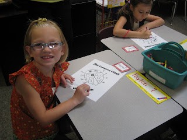
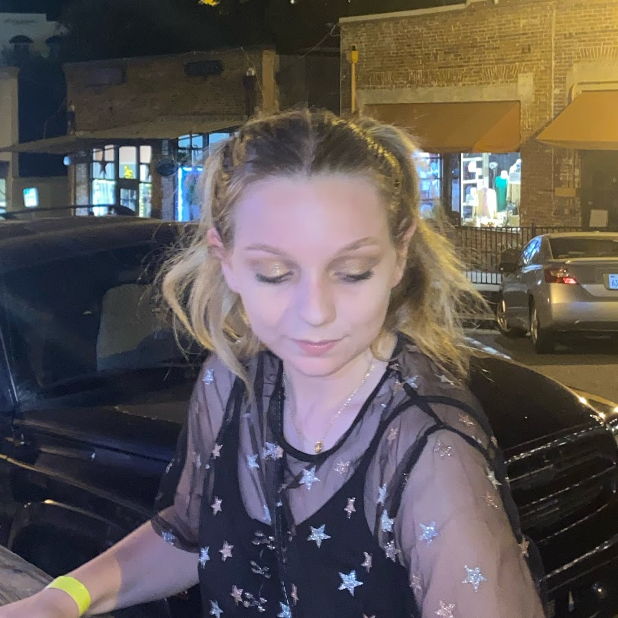

I've had a lot of experiences in life that I think make me an individual and unique person.
A Summary of the Past
Ever since I was in school, I've always been a gifted kid. I catch on and memorize things easily, which helped me through highschool. It is not, unfortunately, helping me through college. I'm majorly suffering with gifted kid burnout syndrome.
One symptom of my ADHD is that I dabble in a LOT of different things. I've tried theatre, playing an instrument, studying to go into the medical field, soccer, making bracelets, collecting shoes and clothes, video games, and most currently, rollerskating.
There are so many more things I could go into thorough detail about. If you would like to learn more about me personally, please visit my resume!
Who I Am Now
Lot's of life experiences turned me into I am today. And genetics from my dad, apparently.
 A picture of me!I'm a unique, strong, and gifted person who is very lucky to end up in the position I am right now. I go to university, church, and engage in hobbies whenever I want to! I am extremely determined, and if I want to get something done it will happen. I'm an efficient worker when doing tasks, which will help me out a lot in the workplace when I settle on a career.
Making this website was fun! Even though it was for a school assignment, I enjoy learning new things and watching a great outcome when I'm done.